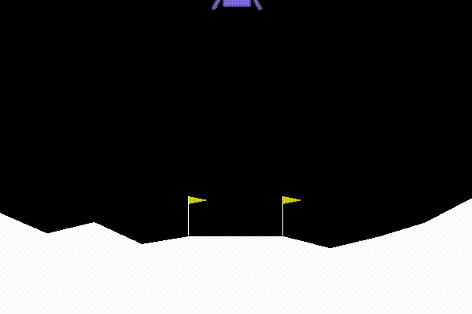

PPO agent trained to play LunarLanderContinuous-v2. Reward per episode at this point was ~230.
Welcome to flare’s documentation!¶
Flare was written to be a modular reinforcement learning library.
Find the full contents of the flare package.
flare is a small reinforcement learning library. Currently, the use
case for this library is small-scale RL experimentation/research. Much
of the code is refactored from and built off of
SpinningUp, so massive
thanks to them for writing quality, understandable, and performant code.
(old) Blog post about this repository here.
Flare documentation